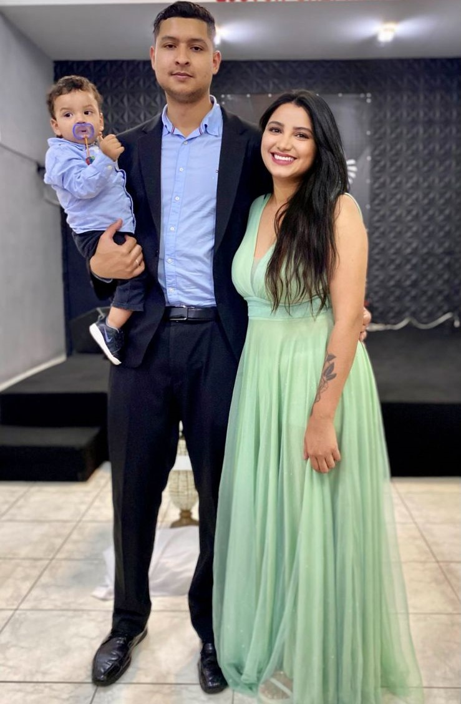

Olá! Meu nome é Gisele Carvalho. Vou iniciar minha apresentação com uma frase que diz: "Todos os seus sonhos estão dentro do seu alcance. Tudo o que você tem que fazer é continuar se movendo em direção a eles." Essa frase é da Viola Davis, uma atriz que eu admiro muito.
Atualmente, trabalho como assistente comercial e estudo análise e desenvolvimento de sistemas na UNINTER. Me formei em logística, mas nunca atuei na área. Também fiz vários cursos, como Excel, Power BI e Big Data, entre outros.
Trabalhei por muitos anos como cabeleireira até 2022. Na área de cabeleireiro, fiz muitos cursos de especialização e aperfeiçoamento, sempre buscando melhorar. Em 2023, decidi iniciar uma transição de carreira para o setor tecnológico, uma área pela qual sempre tive curiosidade. Apesar de ter uma carreira consolidada e uma boa carteira de clientes como cabeleireira, o nascimento do meu filho no ano passado me deu a coragem necessária para mudar.
Voltando um pouco na minha história, tive que morar sozinha aos 13 anos e sempre trabalhei muito, sem ter família por perto. No entanto, o nascimento do meu filho me fez perceber o valor da família e a importância de buscar novas oportunidades. Embora eu ainda tenha muito a aprender, sou determinada, tenho facilidade para aprender e muita força de vontade.
Como mulher, mãe, e esposa, escolhi essa área porque acredito que posso contribuir com minha determinação para impulsionar o avanço tecnológico e promover a inclusão de mulheres e mães nesse setor. Adoro aprender coisas novas e compartilhar experiências.
Abaixo uma foto da minha com a minha familia ♥
